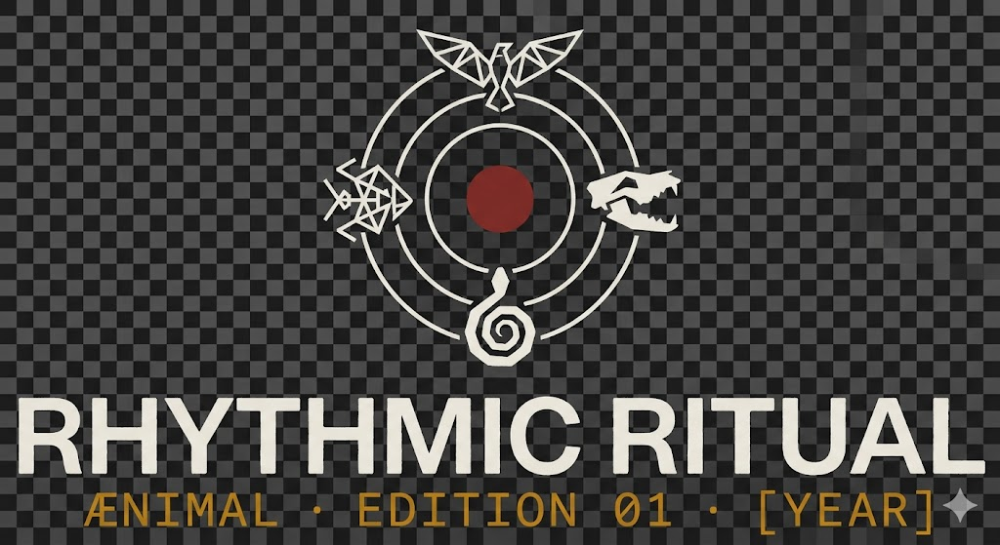
Legacy link
Fifteen years of instinct, rebuilt in chrome.
Animinimals becomes a living machine: organic memory, exposed circuitry, pressure-tested rhythm, and a door held open for every generation.
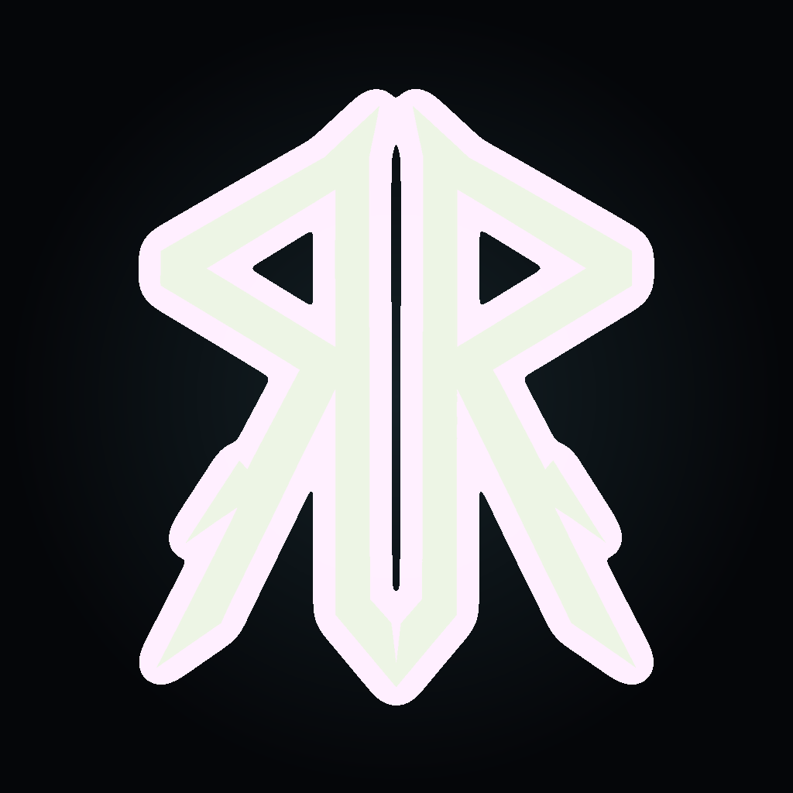
Rhythmic Ritual AccessEdition 01 · Psytrance Jungle
The Zoo is closed. The wild never left. AENIMAL wakes inside a neon trance spiral and opens the first transmission at T Schuurke, Vlijtingen.
Transmission 01

Legacy link
Animinimals becomes a living machine: organic memory, exposed circuitry, pressure-tested rhythm, and a door held open for every generation.
Venue
Local ground, temple treatment. Vlijtingen tuned for a Berlin-grade ritual.
Code phrase
The floor is not reserved for an age, scene, or status. The ritual widens.
Graphic story
The old gate clicks shut. The Zoo becomes memory.
Do you remember?
Under Vlijtingen, a kick drum starts mapping roots into wires.
The floor is listening.
AENIMAL assembles itself from bass pressure, chrome ribs, and jungle code.
Psytrance opens the tunnel: spirals, squelch lines, ultraviolet acceleration.
Follow the pulse.
Veterans and first-timers cross the same threshold. No one stands outside the signal.
The Zoo is closed. The wild never left. Welcome home.
The Ritual begins.
AI comic studio
Two ComfyUI StoryDiffusion passes are archived here: v2 keeps the rooftop ritual sequence direct, while v3 is the clean character pass.
Open archiveRooftop ritual pass
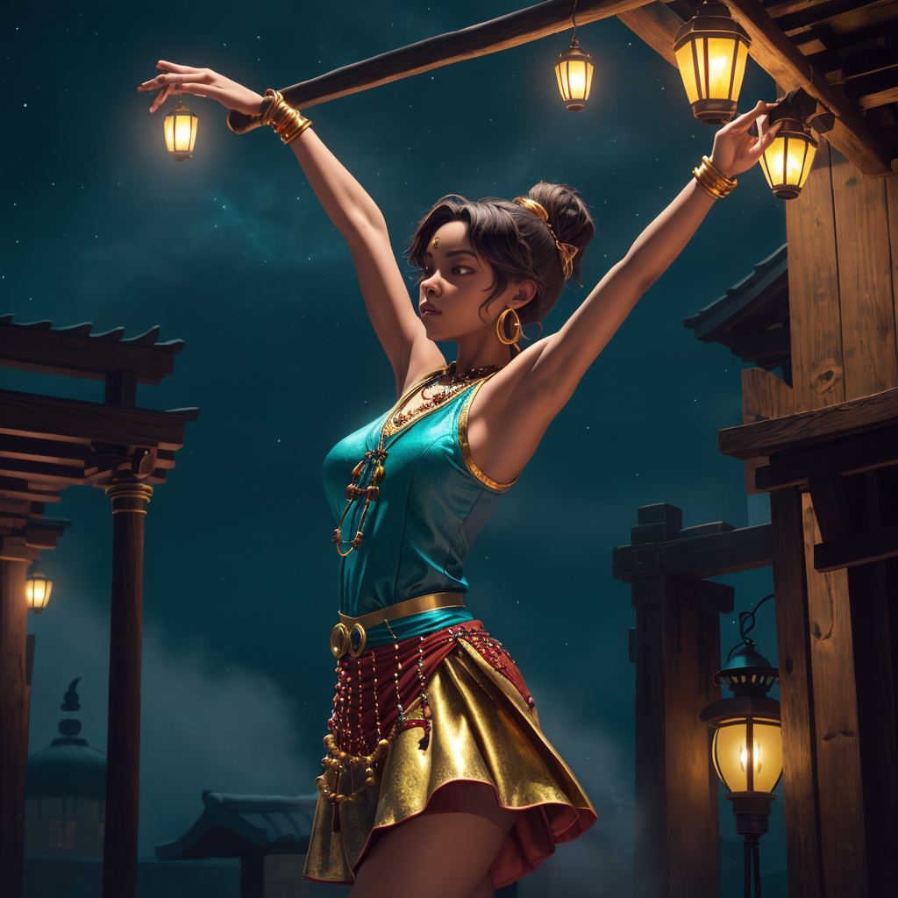
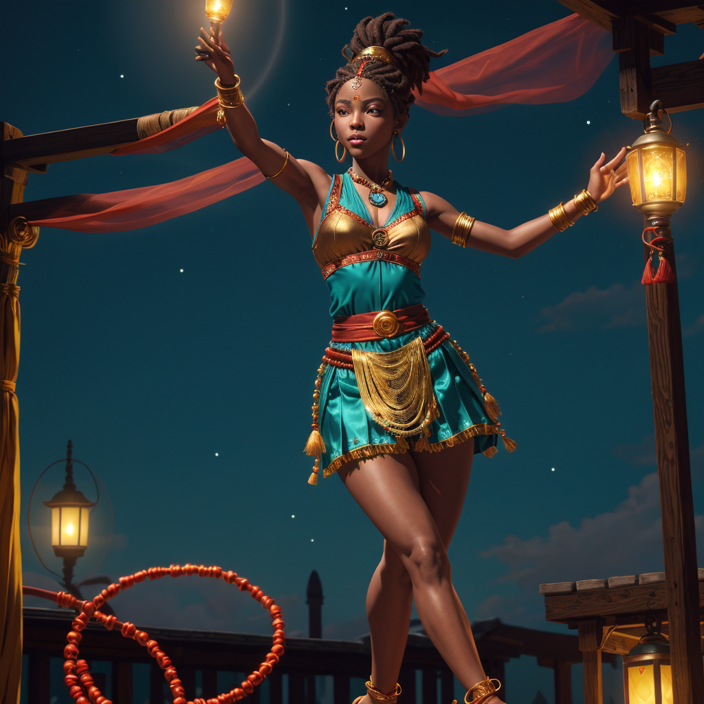
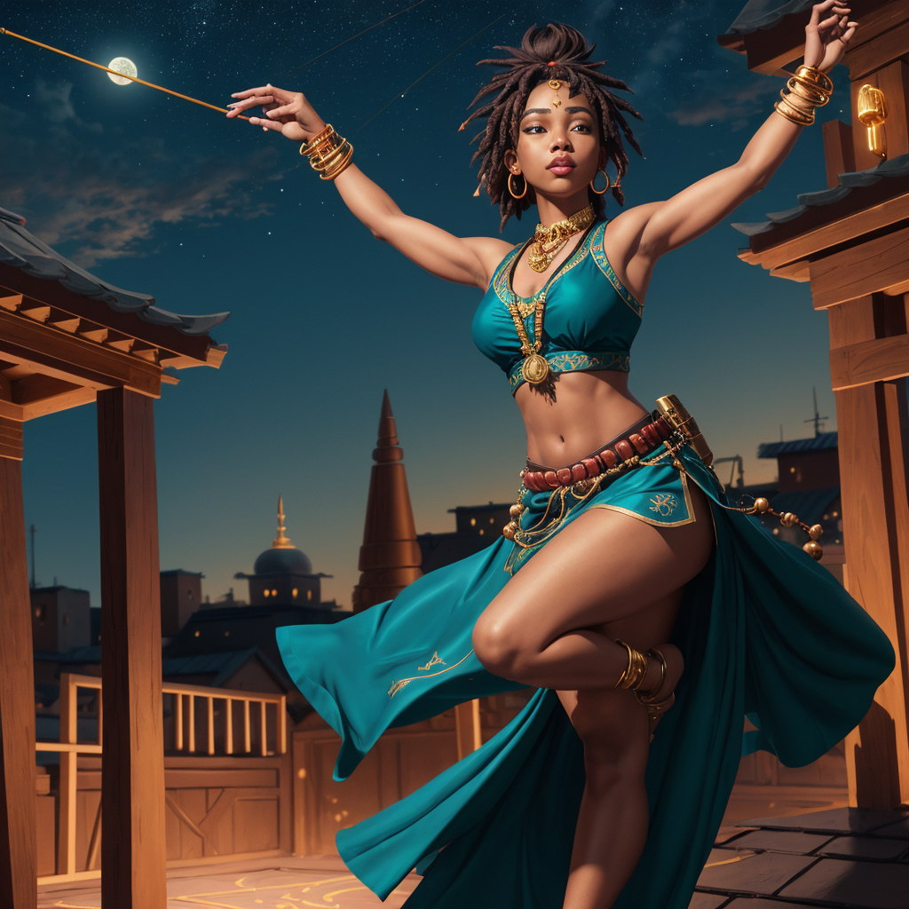
Clean character pass
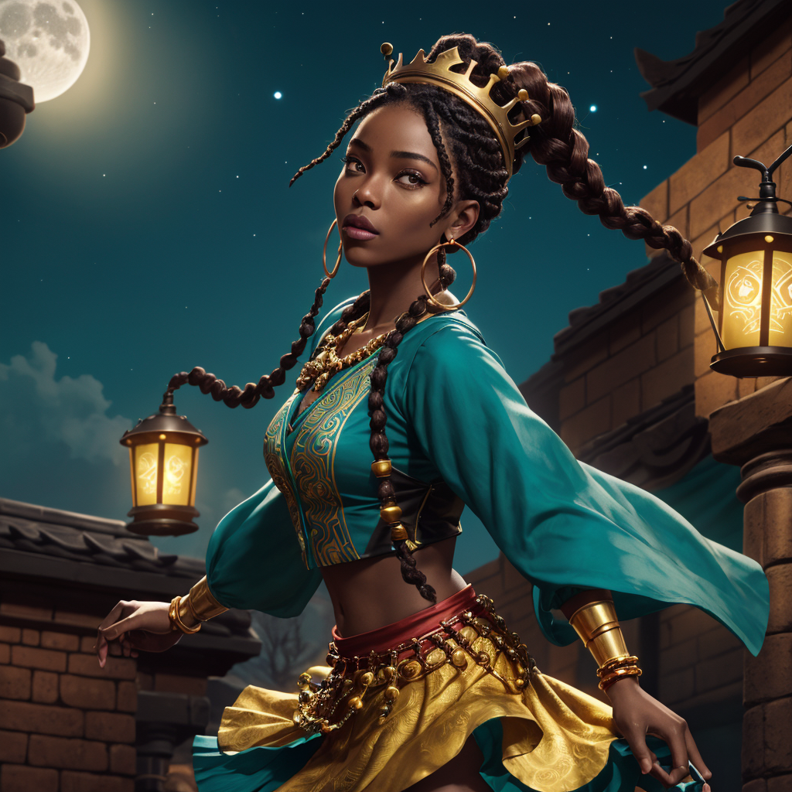
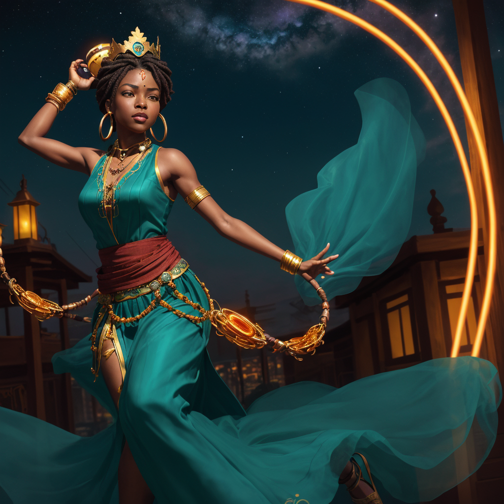
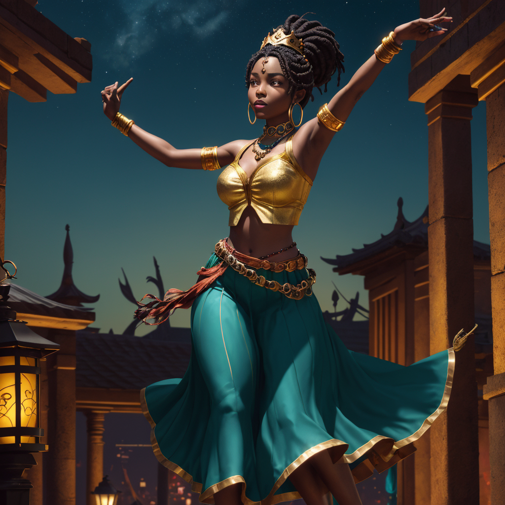
Frequency map
Squelch spirals, elastic bass, ultraviolet acceleration.
Six-part arc
Artifacts
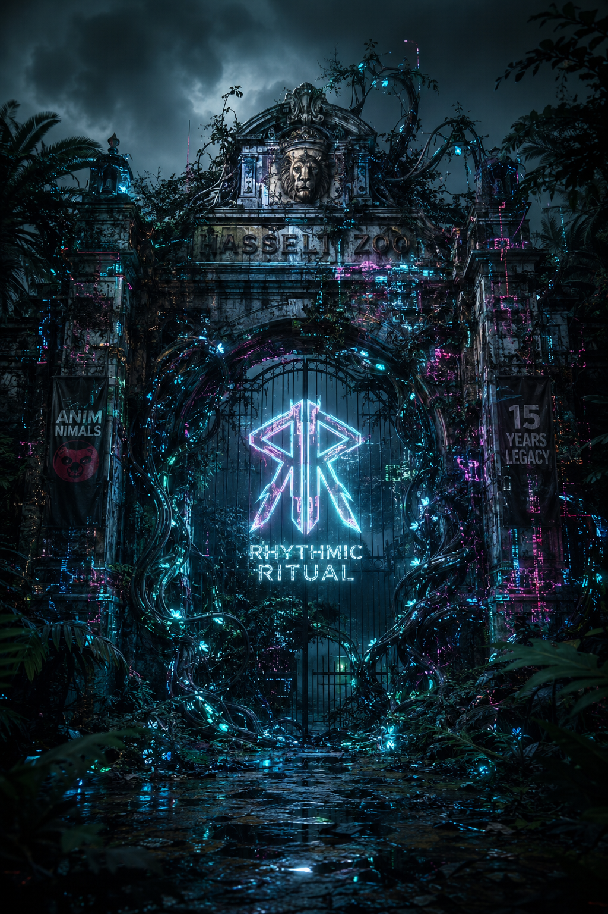
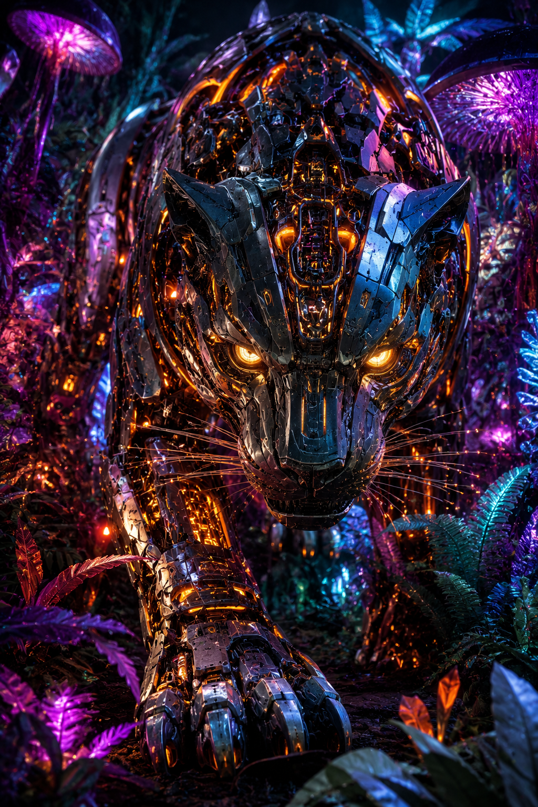
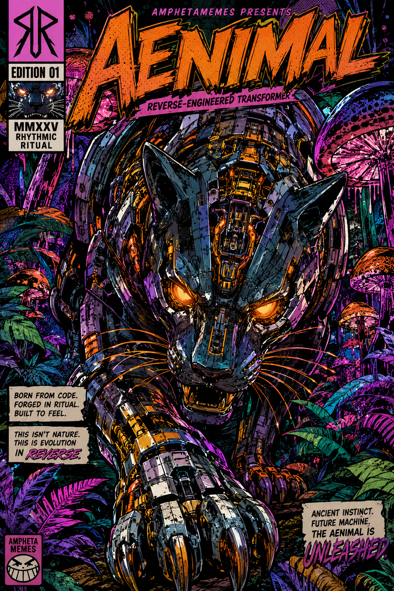
Welcomed home
Veterans, first-timers, techno heads, psytrance drifters, disco heat-seekers, and groovy midnight operators arrive through the same gate. No velvet rope in the machine. Just signal, sound, and belonging.